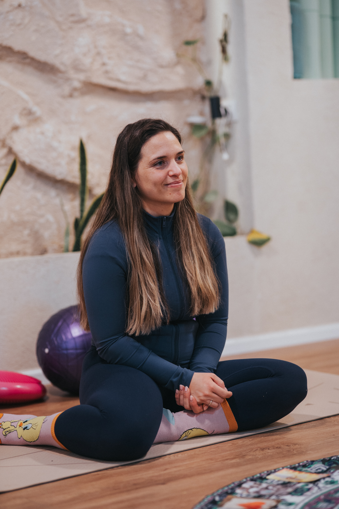
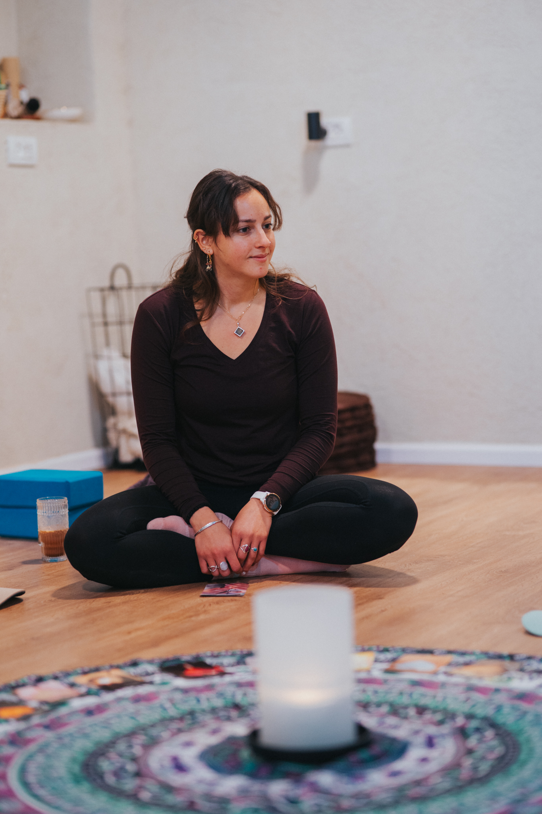
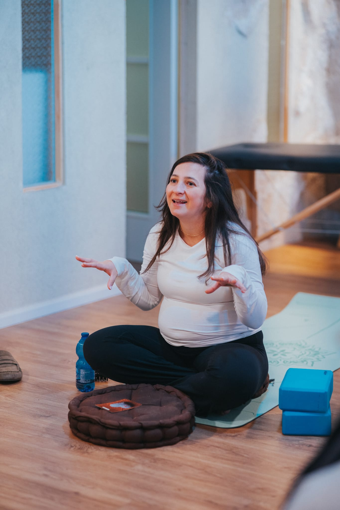
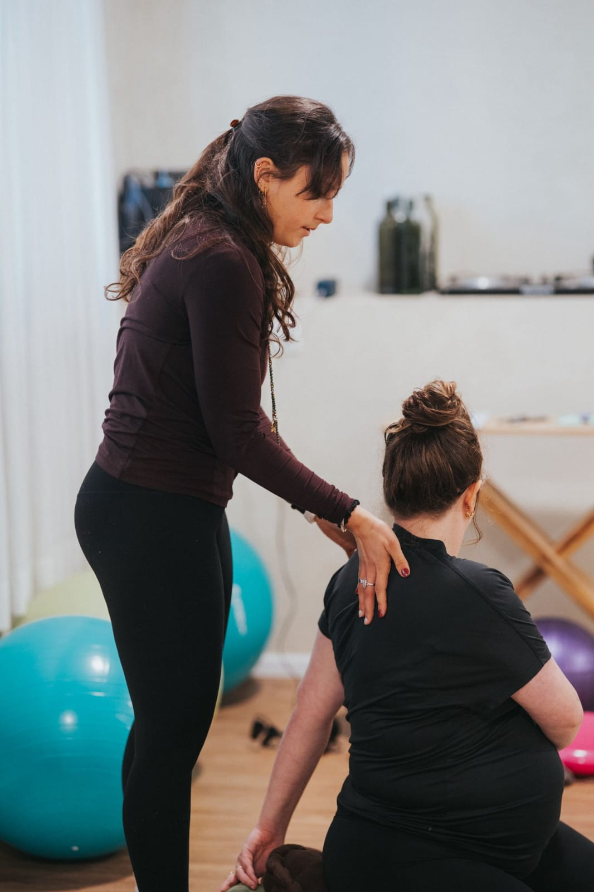
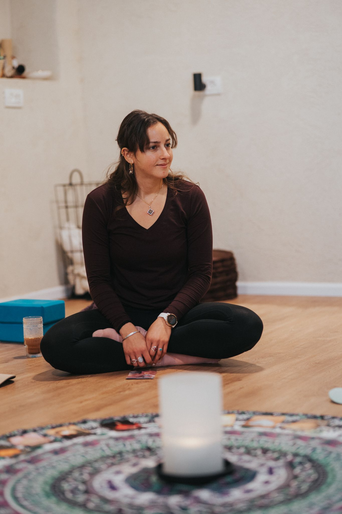
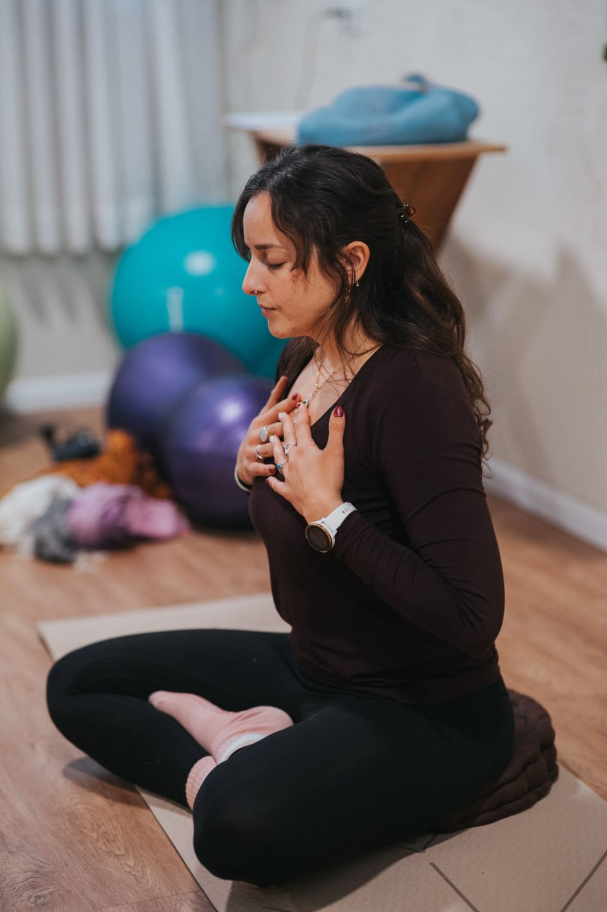
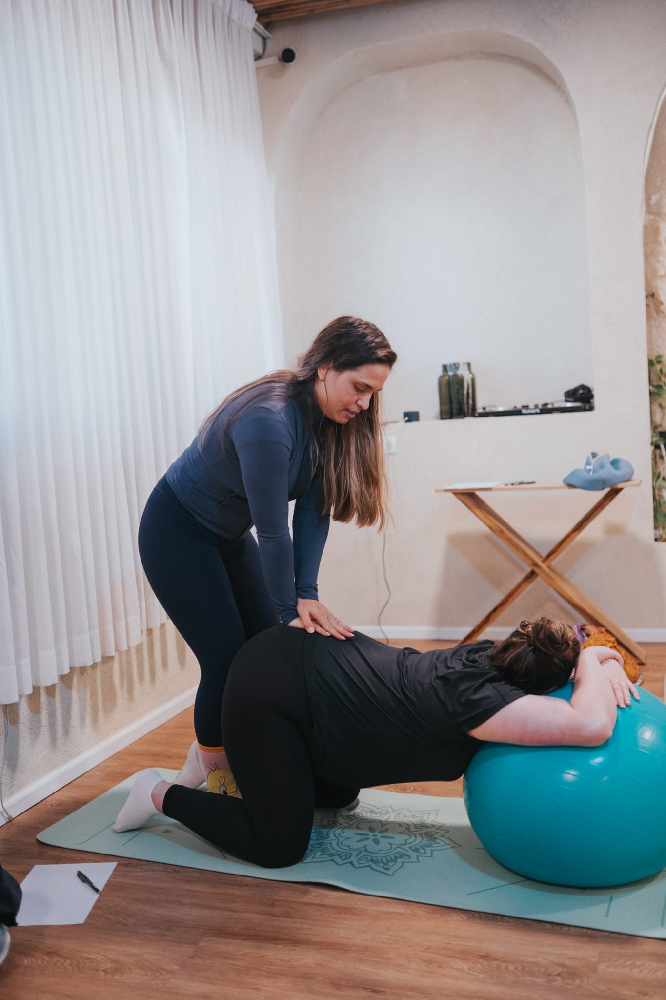

ליווי קבוצתי מקצועי ומחבק לנשים בהריון, לחיבור לגוף ולתנועה כהכנה מדויקת ללידה


אנחנו מאמינות שתנועה היא המפתח לחוויית לידה מעצימה. כנשות מקצוע המגיעות מעולמות התנועה והליווי, יצרנו חיבור ייחודי שמעניק לך מעטפת שלמה- גופנית ורגשית כאחד.
בעולם מלא בדעות ולחצים חיצוניים, אנחנו כאן כדי לעזור לך להנמיך את רעשי הרקע ולהעמיק את הקשב הפנימי. דרך הדיוק מעולמות היוגה והתנועה, תוכלי לחזק את היכולת לסמוך על הגוף שלך ולבנות מודעות ופתיחות פיזית ורגשית לקראת הלידה.
במרחב שלנו תקבלי ידע מקצועי וכלים פרקטיים למהלך ההריון והלידה- מרוטינת תנועה וטכניקות נשימה ועד תנוחות לקידום הצירים והלחיצות, לצד דגשים למלווים לתמיכה משמעותית בזמן אמת.
אנחנו מזמינות אותך להצטרף אלינו בכל אחת מהדרכים שמתאימה לך, ולצעוד אל הלידה שלך בביטחון ובשקט פנימי.

כל מה שצריך בשני מפגשים
הכנה מרוכזת, עמוקה ומעשית, שנועדה להעניק לך ולמלווה שלך את כל הידע והכלים החיוניים ללידה, בליווי מקצועי ואינטימי.

הסוד שבתנועה
מפגש חווייתי המוקדש כולו לשפת הגוף בלידה. בסדנה נהפוך את הידע התיאורטי לכלים גופניים זמינים, שיעזרו לך לנוע בביטחון ובחופשיות בדרך אל התינוק שלך.

זמן לעצור, לנשום ולהתחבר
אנחנו מזמינות אותך לשלושה ימים של חופשה מפנקת בלוקיישן קסום, שבהם המרוץ נעצר וההכנה ללידה מקבלת מרחב עוטף ושקט. זהו מסע של חיבור עמוק לעצמך ולתינוק, באווירה של רוגע ופינוק.

עם קיארה
שיעורי היוגה שלי מציעים לך מרחב לנשימה, תנועה וחיבור עמוק לגוף המשתנה. התרגול מותאם לכל שלבי ההריון ונועד להעניק לך כלים גופניים ומנטליים לקראת הלידה, יחד עם מענה רגשי ורגעים של שקט והרפיה.

עם דיאנה
הליווי שלי כדולה נועד לתת לך בדיוק את מה שאת צריכה ברגעים הכי משמעותיים שלך — ביטחון, ידע, נוכחות ותמיכה אמיתית, לפני הלידה, במהלכה ואחריה.
מה כולל הליווי:
"הליווי הזה עשה את כל ההבדל. הרגשתי בטוחה, חזקה ומוכנה ללידה. תודה על כל הסבלנות והאהבה."
"היוגה להריון והמפגשים עם הקבוצה היו המקום הכי בטוח והכי מחבר שהיה לי בהריון. ממליצה בחום!"
"הדולה שלי הייתה איתי בכל צעד, ענתה על כל שאלה והייתה הכוח השקט שלי בלידה. אסירת תודה."
יש לך שאלות? רוצה לשמוע עוד על הליווי או להירשם לאירוע?
צרי איתנו קשר בדרך הכי נוחה לך – נשמח לדבר ולהכיר.